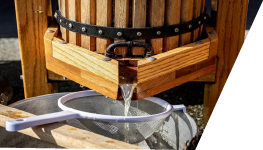

Crowdfunding
Cider maken
Tijdens de workshop cider maken pluk je eerst je eigen appels en leer je daarna onder deskundige en plezierige begeleiding de basisprincipes van fermentatie en cider maken.
Tijdens de workshop cider maken pluk je eerst je eigen appels en leer je daarna onder deskundige en plezierige begeleiding de basisprincipes van fermentatie en cider maken.
Je trekt met Kasper het land in en bezoekt het bos en fruitboomgaard. Het leuke hiervan is dat je in verbinding staat met natuur en de biologische keuken
Wie wil er nu geen eigen appelboom?! Bij aankoop van een boom steun je hun missie: het bouwen van een regeneratief landbouwsysteem in de Noord-Hollandse polder.